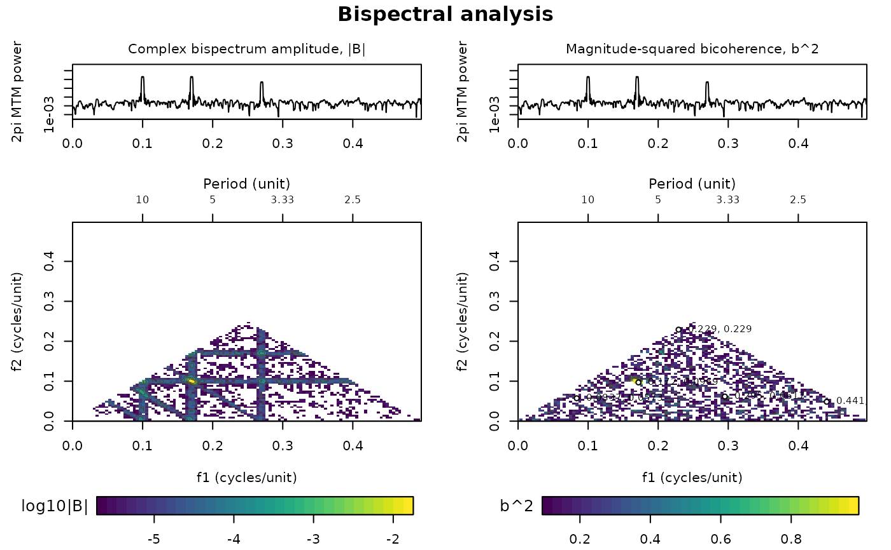
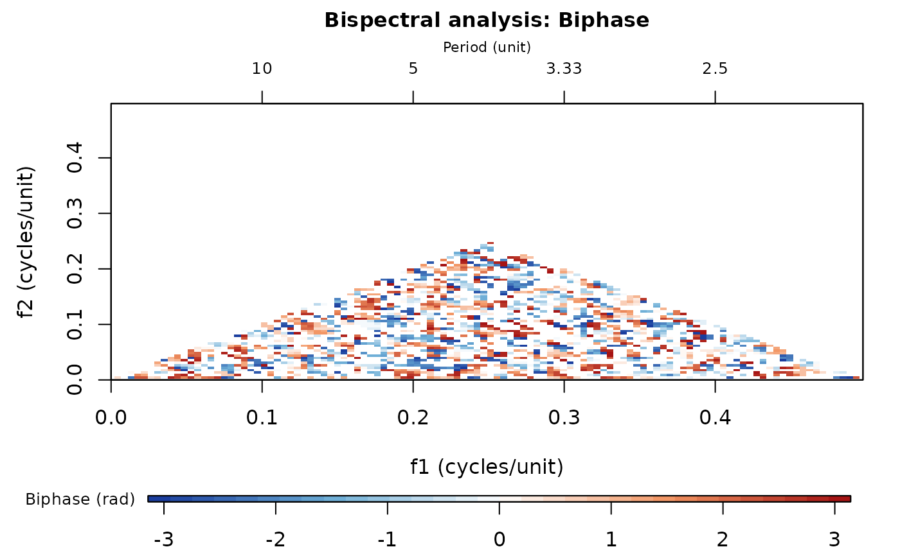

The plot_bispectral function plots the result of
bispectral_analysis. The "overview" layout follows Acycle:
two aligned 2pi multitaper power spectra (NW = 2, 3 tapers, NFFT = 5N) above
maps of the bispectrum magnitude (log10|B|) and the squared bicoherence,
with the strongest fraction of each map retained, the significance
boundary (if inference was calculated) drawn in black, the strongest
(significant) bicoherence peaks annotated and period axes on top.
Single maps of "bicoherence", "magnitude", "biphase", "real" or
"imaginary" can also be drawn. Rendering is simplified with respect to
Acycle (no interpolated display mesh or alpha ramp).
Translated from Acycle v3.1 bispectralPlot.m (Mingsong Li).
Usage
plot_bispectral(
result = NULL,
quantity = "overview",
keep_bispectrum = 0.5,
keep_bicoherence = 0.5,
color_grid = 32,
freq_min = 0,
freq_max = NULL,
reference_periods = NULL,
frequency_pairs = NULL,
peak_count = 5,
show_period_axes = TRUE,
show_significance = TRUE,
title = NULL,
colour_grid = NULL
)Arguments
- result
Bispectral analysis result to plot: the list returned by
bispectral_analysis. Required (Default=NULLgives an error).- quantity
What to plot (character, case-insensitive):
"overview": the Acycle layout with two multitaper power spectra above the bispectrum magnitude and bicoherence maps;"bicoherence"(aliases"bicoherence-squared","b2"): map of the squared bicoherence;"magnitude"(alias"bispectrum-magnitude"): map of log10|B|;"biphase"(alias"phase"): map of the biphase in radians;"real"(alias"bispectrum-real") or"imaginary"(alias"bispectrum-imaginary"): map of the real or imaginary part of the bispectrum.
Default="overview".- keep_bispectrum
Fraction of the strongest |B| values that is shown on the magnitude, real and imaginary maps (numeric, in (0, 1]); weaker cells are left blank and the colour scale is stretched over the retained values. 1 shows all cells.
Default=0.5.- keep_bicoherence
Fraction of the strongest squared bicoherence values that is shown on the bicoherence and biphase maps (numeric, in (0, 1]); weaker cells are left blank. 1 shows all cells.
Default=0.5.- color_grid
Number of colours of the colour scale of the maps (integer, 4 to 256).
Default=32.- freq_min
Lowest frequency shown on both frequency axes of the maps and on the power spectra, in cycles per unit of the depth/time column (numeric, >= 0; negative values are set to 0).
Default=0.- freq_max
Highest frequency shown, in cycles per unit of the depth/time column (numeric, >
freq_min);NULL, or a value above the computed range, shows the full computed frequency axis.Default=NULL.- reference_periods
Periods (numeric vector, in depth/time units) drawn as dashed guide lines f1 + f2 = 1/period on the maps, to show where interactions that produce these periods plot;
NULLdraws none.Default=NULL.- frequency_pairs
Frequency coordinates marked with dotted vertical (f1) and horizontal (f2) guide lines: a two-column matrix (or a numeric vector that is read as one) with f1 in column 1 and f2 in column 2, in cycles per unit;
NULLdraws none.Default=NULL.- peak_count
Maximum number of the strongest (significant, if inference was calculated) squared bicoherence peaks that are marked and labelled with their (f1, f2) on the bicoherence map (integer, >= 0; 0 marks none).
Default=5.- show_period_axes
Add a period axis (1/frequency) on top of the maps (logical, TRUE or FALSE).
Default=TRUE.- show_significance
Draw the boundary of the significant region as a black contour, when
bispectral_analysiscalculated significance (logical, TRUE or FALSE).Default=TRUE.- title
Title of the figure (character);
NULLuses"Bispectral analysis". For a single map the name of the map is appended.Default=NULL.- colour_grid
British spelling of
color_grid; if given (notNULL) it overridescolor_grid.Default=NULL.
References
Li, M., Hinnov, L., Kump, L., 2019. Acycle: Time-series analysis software for paleoclimate research and education. Computers & Geosciences 127, 12-22.
Examples
# \donttest{
set.seed(4)
t <- 0:1023
y <- cos(2 * pi * 0.1 * t) + cos(2 * pi * 0.17 * t) +
0.5 * cos(2 * pi * 0.27 * t) + 0.3 * rnorm(1024)
res <- bispectral_analysis(data = cbind(t, y), max_freq_bins = 128)
plot_bispectral(res)

plot_bispectral(res, quantity = "biphase")

# }